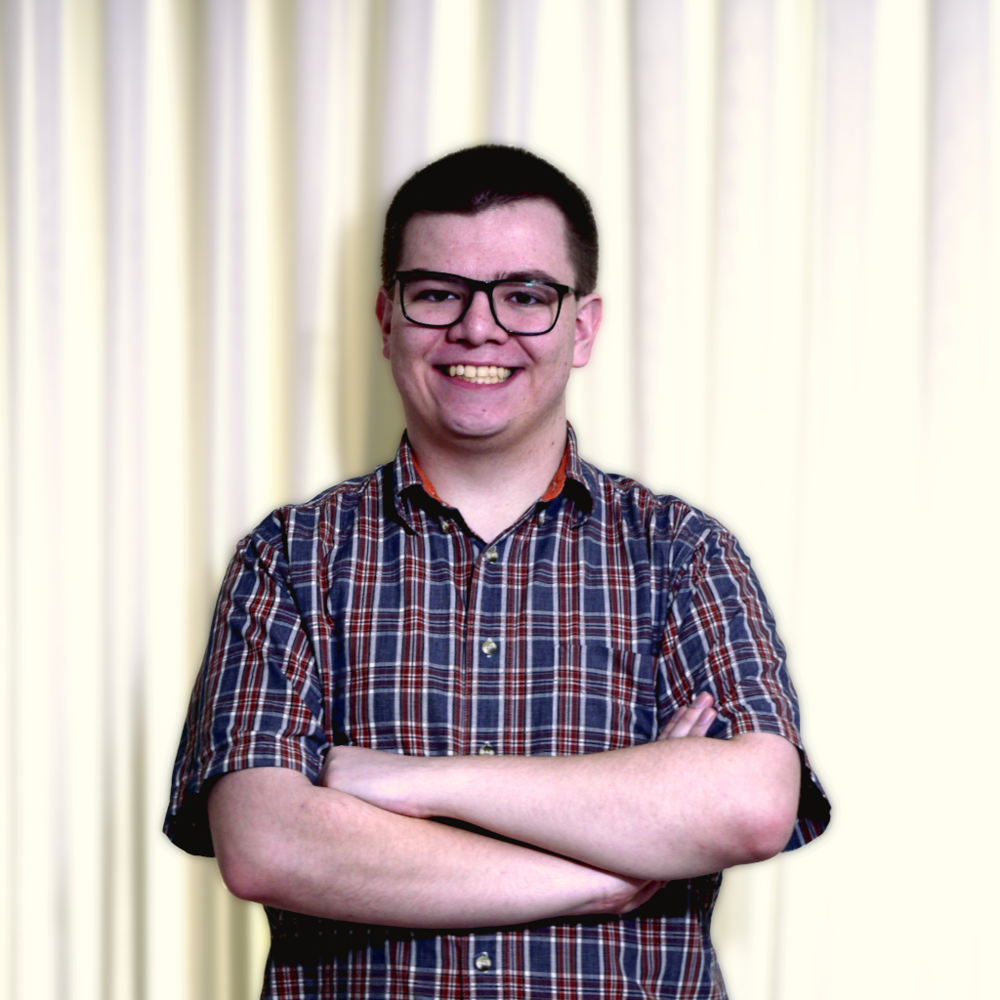

Jeremy Moyes

I'm a passionate programmer who is almost entirely self taught.
I have experience with various technologies, including, but not exclusively, C++, C, Python, Lua, OpenGL, DJango, Unreal Engine 4, and Unity
I started programming in Lua as a way to create games for the Minecraft mod ComputerCraft. After a few years of tinkering, I expanded into other languages like Python, C, and C++.
After that, I became curious about how 3D games were made so I started learning Unreal Engine 4 and Unity. My curiosity drove me further and I eventually learned modern OpenGL.
In 2018, I participated in a programming competition as part of my school's Technology and Student Association club. While participating, I started to learn how to work with other
people in order to accomplish a common goal. Through a lot of hard work, my team and I won first place state wide and later participated at the national level.
In 2021, after working on many projects, I started branching out and learned DJango and completed a small project that involves user management and a voting system.
After completing that project, I decided to improve my ability to work with multiple people so I started working on implementing AMD's FidelityFX Super Resolution into the open source engine Godot.
It was initially a challenge to incorporate other people's ideas and goals regarding my contributions, but eventually I learned how to find the middle ground and make everyone happy.
Contact me
jeremymoyes3@gmail.com
(385) 349-9485